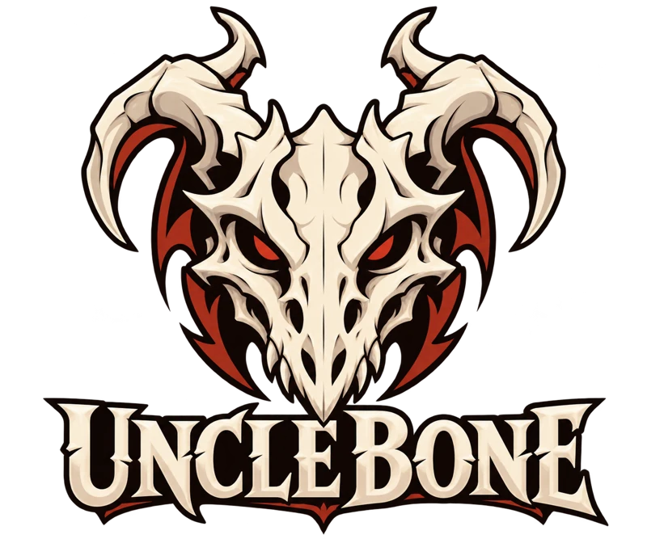

Bone
Archive
CONQUEST FIELD RECORDS
Classes
⌄
Performance
Build
⌄
PLAN YOUR CHARACTER
Spec finder
Find your playstyle
Talent builder
Plan and share a build
Gear & BiS
Ranked equipment candidates
Tools
⌄
PLAYER TOOLS
Macro workshop
Build targeting macros
Addons & WeakAuras
Imports and community tools
Saved builds
Return to your plans
Archive
⌄
RESEARCH & RECORDS
Spells & abilities
Ranks and spell IDs
Spec comparison
Sidekick estimates for all 70 specs
Sources & evidence
Research catalog and provenance
CoA-Research
Research repository on GitHub
Combat logs
Local log analysis
Opening the archive…